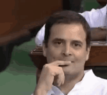
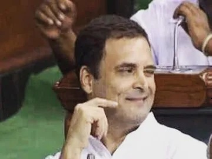
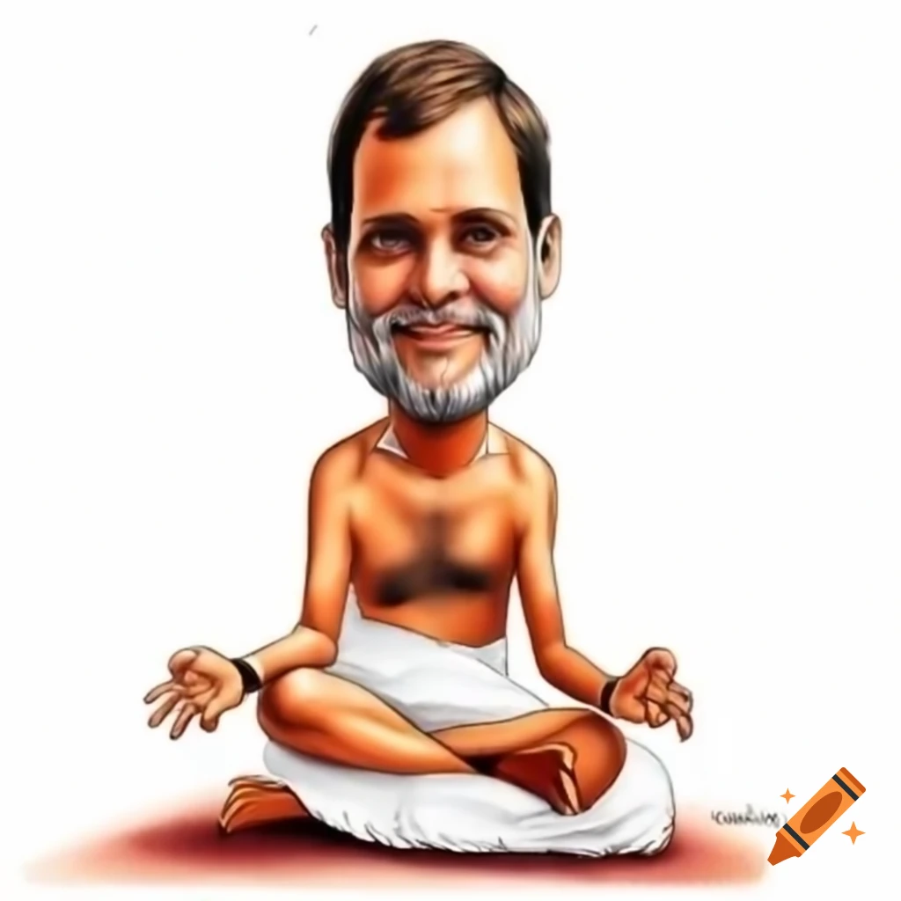

Rahul Gandhi: The Man, The Meme, The Machine That Converts Potatoes to Gold
Early Life: Born with a Silver Spoon, Misplaced the Fork
Rahul Gandhi, born on June 19, 1970, into India’s first political family, was raised in an environment where politics was as natural as breathing — and just as confusing for him. Grandson of Indira Gandhi and son of Rajiv Gandhi, Rahul was expected to lead the nation. Instead, he led memes, confusion, and many unintentional stand-up comedy sessions.
Educated at prestigious institutions like Harvard (well, kinda... he transferred), he was the perfect blend of elite education and “wait, what did he just say?” moments.

The Rise of the Meme King: Enter Aloo Dalo, Sona Nikalo
In one iconic moment of political glory-slash-disaster, Rahul Gandhi, in an attempt to talk about industrial machines, proudly declared:
“Aisi machine banaunga jismein ek taraf se aloo daalo, doosri taraf se sona nikle.”
And thus, the Aloo Dalo Sona Nikalo™ moment was born — not in Parliament, but in the hearts of meme lords forever. Economists cried, engineers questioned reality, and potatoes... well, potatoes never felt more hopeful.

Political Career: The PowerPoint that Never Loaded
Rahul Gandhi’s political career has been a rollercoaster — except it’s mostly the part before the first drop, full of suspense and no real movement. As Congress’s Prime Minister-in-waiting for what feels like a Netflix series with infinite seasons, he’s given India unforgettable gems:
- Asking questions nobody understands
- Smiling mid-sentence like he just remembered he left the stove on
- Turning every political speech into a TED Talk for toddlers
.avif)
Legacy: Potato Prophet or Political Parody?
While leaders talk about GDP, inflation, and infrastructure, Rahul went full Willy Wonka with agriculture, dreaming of golden tubers. The economy may rise or fall, but "Aloo se sona" remains recession-proof — it lives in memes, WhatsApp forwards, and every Indian parent’s joke arsenal.

Conclusion: Rahul Gandhi — India's Most Precious Root Vegetable Exporter (In Theory)
Love him, roast him, meme him — Rahul Gandhi remains a uniquely confusing yet entertaining force in Indian politics. The kind of guy who'd bring a potato to a gold-buying ceremony and still act surprised when it doesn't work.
He may not have built the machine yet… but in the hearts of meme-makers, he’s already turned politics into gold.
🥔✨ Aloo daalo. Laughter niklo. ✨🥔